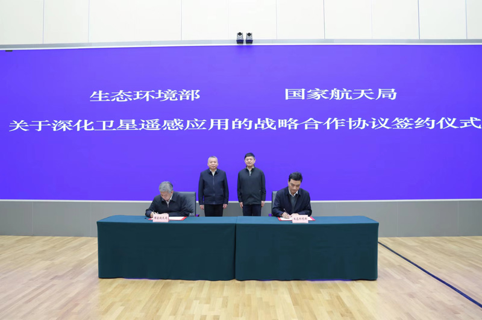
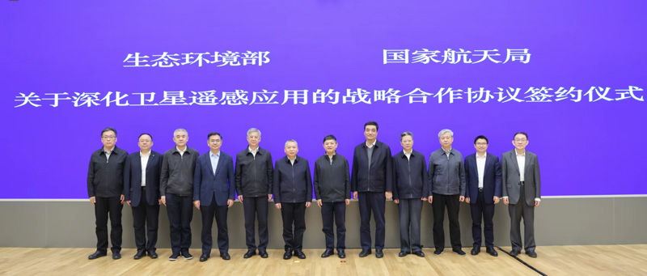

4月28日，国家航天局与生态环境部在京签署关于深化卫星遥感应用战略合作协议。国家航天局局长张克俭、生态环境部部长黄润秋出席协议签署仪式并讲话。
张克俭对生态环境部长期以来对国家航天局的支持表示感谢。他表示，双方有着高度契合的发展理念并保持着良好的合作关系，此前共同推动了生态环境领域卫星技术的相关研究，推动了环境减灾一号卫星、高分五号卫星、大气环境监测卫星等科研卫星的建设和应用，逐步构建起生态环境卫星监测体系，为生态环境保护和治理提供服务。党的二十大报告指出，要推进美丽中国和航天强国建设;推动绿色发展，促进人与自然和谐共生。双方签署战略合作协议意义重大，是深入学习贯彻落实党的二十大精神的有力举措，也是学习贯彻习近平新时代中国特色社会主义思想主题教育的切实行动。此次深化合作，既是努力建设美丽中国和落实双碳战略的重要手段，也是充分利用航天技术进一步提升我国生态环境监测能力和全面构建全要素立体监测体系，推动生态环境监测向天地一体化方向发展的有益尝试。未来，国家航天局将继续提升卫星应用业务的服务能力，切实为解决生态环境领域的问题提供有力支撑。
黄润秋回顾了两部门在多个领域开展的良好合作，并代表生态环境部对国家航天局长期以来对生态环境保护工作的大力支持表示感谢。他表示，不久前全国两会胜利闭幕，在全国上下掀起学习贯彻党的二十大精神和习近平新时代中国特色社会主义思想热潮的重要时刻，双方签署战略合作协议，标志着双方合作进行新的发展阶段，深化部局战略合作，有力推进航天科技与生态环境保护工作深度融合，以卫星遥感助力深入打好污染防治攻坚战和碳达峰碳中和战略，是共同深入学习贯彻党的二十大精神、践行习近平生态文明思想的实际举措。面对新形势新任务，两部门在已有基础上持续深化生态环境领域卫星遥感应用务实合作，进一步发挥部局各自优势，推进生态环境卫星建设、卫星应用高质量发展，共同推进生态环境卫星整体技术提升和遥感应用技术发展，不断提高环境治理现代化水平，将为落实精准、科学、依法治污，助力深入打好污染防治攻坚战、持续改善生态环境质量提供有力支撑。


按照协议内容，双方将在生态环境卫星体系建设、遥感应用服务、国际交流合作等方面开展深入合作，进一步完善合作推进机制，促进卫星遥感技术更好支撑生态文明建设和生态环境保护，共同推进美丽中国和航天强国建设，不断满足人民日益增长的优美生态环境需要，促进人与自然和谐共生。
本文来源：国家航天局
联系地址：沈阳市浑南区全运二西路30号
联系电话：158xxxxxxx 邮箱：196xxxxxxx@qq.com
Copyright @ 2023 XXXXX